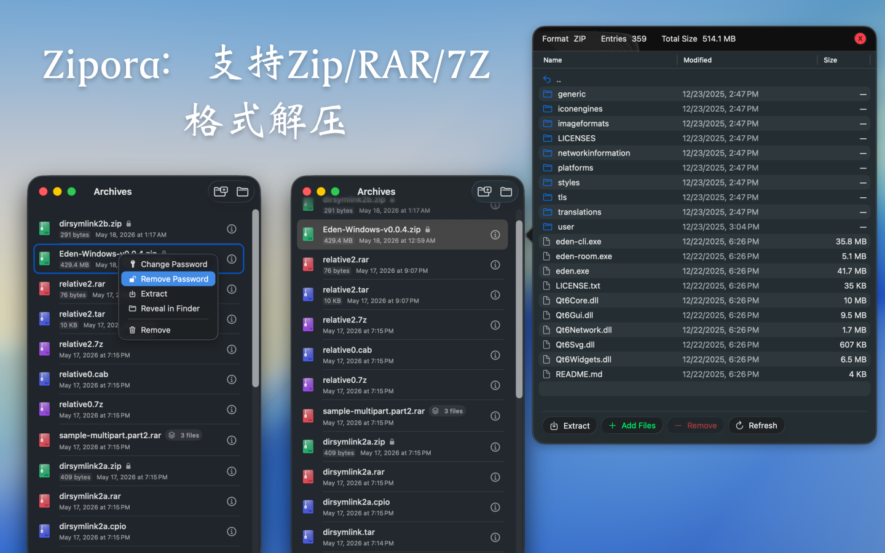
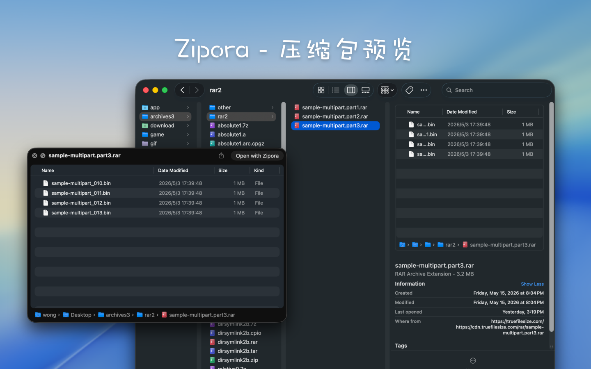
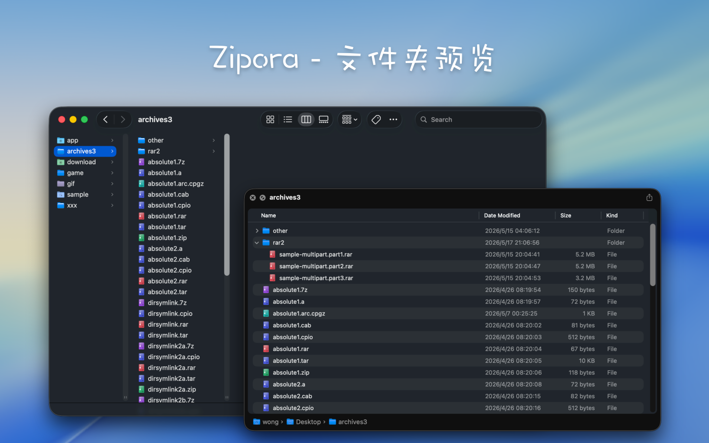

Zipora 是什么
Zipora 是一款使用 Swift / SwiftUI 构建的 macOS 原生归档工具，面向桌面上的日常压缩、解压、预览与整理场景。
它并不只是“解压器”，而是围绕归档文件提供一套完整工作流：
- 拖拽文件或文件夹，快速创建新压缩包
- 打开归档后直接预览目录树、文件大小、修改时间
- 解压到指定目录，并可在完成后从 Finder 快速定位
- 记录最近打开的归档，方便再次查看、解压或继续处理
- 遇到受密码保护的归档时，在打开或解压流程中补充密码继续操作
- 对支持重建的格式执行归档内容整理，例如添加文件、移除文件
- 为现有 ZIP 归档追加密码保护
功能特性
- 使用 Swift / SwiftUI 构建的 macOS 原生应用
- 支持 macOS 14 及以上版本
- 首页支持拖拽归档预览 / 解压，或拖拽多个文件和文件夹直接建包
- 支持最近打开记录，以及可用性和加密状态识别
- 支持压缩包内容预览，可按当前目录搜索并按层级浏览
- 支持选择目标目录解压，并展示进度
- 支持为受密码保护的归档输入密码后继续打开或解压
- 支持创建 ZIP、7Z、TAR、TAR.GZ、TAR.BZ2、TAR.XZ
- 支持为 ZIP 创建加密压缩包
- 支持对可重建格式执行归档编辑：添加文件、移除文件
- 支持为现有 ZIP 归档追加密码保护
支持的格式
支持创建压缩包
当前界面中可直接创建以下格式：
zip7ztartar.gz / tgztar.bz2 / tbz2 / tbztar.xz / txz
说明：
- 界面主展示格式名为
ZIP、7Z、TAR、TAR.GZ、TAR.BZ2、TAR.XZ
tgz、tbz2、tbz、txz 是对应格式的常见别名扩展名- 当前只有
ZIP 支持创建时直接启用密码保护
支持打开 / 预览 / 解压
当前支持打开、预览或解压以下常见格式：
7z / zip / tar / tgz / gz / bz2 / xz / lzma / zst / lz4 / lzip / cpio / xar / warc / rar / ar / a / deb / pkg / iso / cab / jar / apk / ipa / whl / mtree / shar
具体支持效果仍取决于底层后端能力，以及压缩包本身的结构、加密方式和兼容性。
当前实现说明
- 某些加密归档是否可读取、预览或解压，仍受底层归档库支持范围限制
- 当前支持在“打开 / 预览 / 解压”阶段为需要密码的归档输入密码
- 当前支持创建加密 ZIP，也支持为现有 ZIP 追加密码保护
- 归档编辑能力通过“解压到临时工作区 -> 修改内容 -> 重新打包替换原文件”实现，而不是直接原地修改归档结构
- 只有当前应用能够重新创建的格式，才会开放添加 / 移除文件这类编辑入口
- 默认会在你选择的目标目录下，以压缩包文件名创建同名文件夹，再把内容解压进去